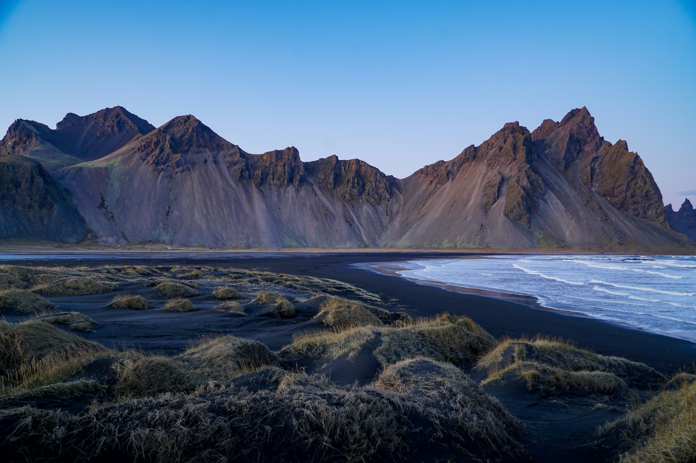

Why Iceland?
Where awe meets adventure
Geologically, Iceland is a young island born from volcanic activity. A giant plume of magma deep within the Earth's mantle caused a series of underwater eruptions that built up the landmass we know today. This fiery creation process is still ongoing, as evidenced by Iceland's frequent volcanic eruptions and geothermal features. Vikings are credited with being the first permanent residents, arriving around the late 9th century AD. While there's some debate, historical records suggest a Norwegian chieftain named Ingólfur Arnarson established himself in Iceland in 874, marking the beginning of the Viking Age settlement.